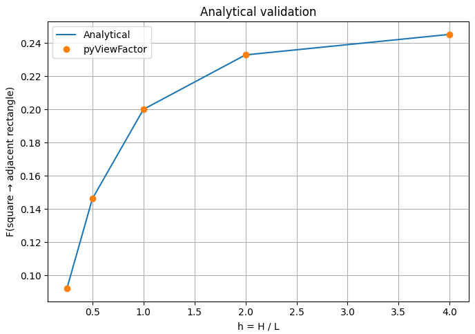
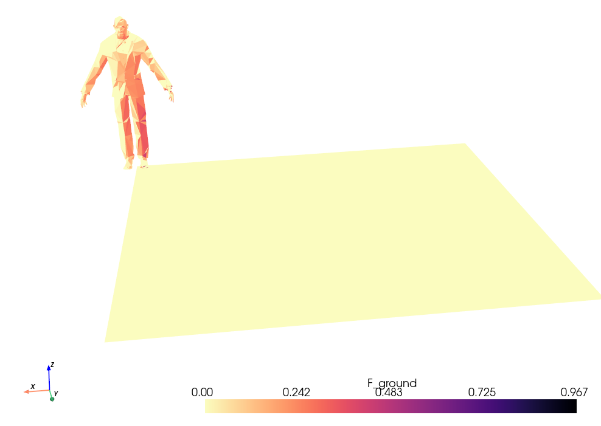
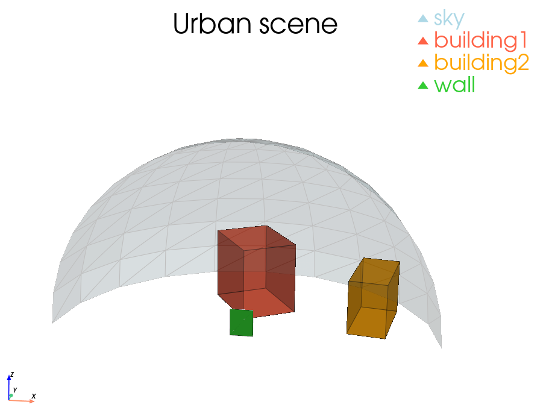
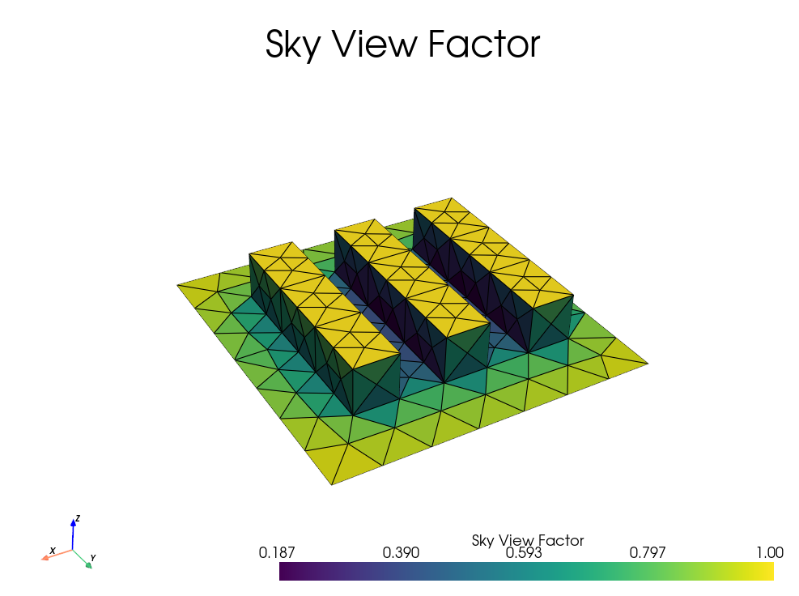
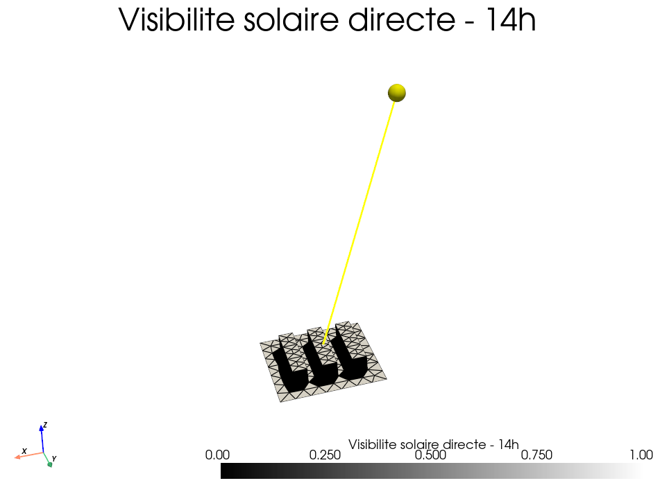
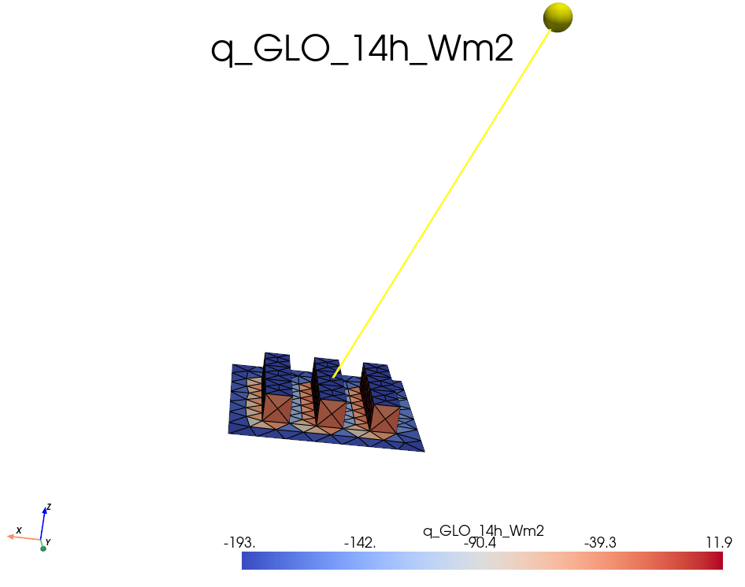

Exercices - pyViewFactor¶
Cette page regroupe les exercices pratiques de la formation. Ils sont pensés pour être lancés comme des scripts Python indépendants, depuis un IDE comme Spyder, VS Code ou PyCharm, ou dans un notebook.
Objectif de la séance
Passer progressivement d'un cas académique simple à des scènes plus réalistes : visibilité, obstruction, validation analytique, discrétisation, matrice complète de facteurs de forme, calcul de SVF, flux grandes longueurs d'onde et export VTK.
Organisation des scripts¶
Les scripts du dossier session/ sont préfixés selon leur rôle pendant la formation.
| Préfixe | Usage prévu | Exemple |
|---|---|---|
0_ |
Supports de cours utilisés pour expliquer les notions de base | validation analytique, influence de la discrétisation |
1_ |
Support guidé pour discuter visibilité et obstruction | tests de normales, rayons, obstruction |
2_ |
Exercices que les participants peuvent lancer seuls | premiers facteurs de forme, cas fermés, scènes urbaines |
3_ |
Mini-projet réalisé ensemble pas à pas | SVF et flux GLO sur scène urbaine |
Fichiers sources et scripts de base¶
Les scripts sont disponibles dans le dossier :
session/
Les géométries, fichiers météo et données associées sont disponibles dans :
session/src_data/
Les sorties générées par le mini-projet sont écrites dans :
session/output/
Lancer un exercice dans un IDE¶
- Ouvrir le dossier du dépôt
simurex2026-pvfdans l'IDE. - Vérifier que l'interpréteur Python sélectionné est bien celui où
pyviewfactorest installé. - Ouvrir un fichier d'exemple dans le dossier
session/. - Vérifier les chemins vers les fichiers de données, par exemple
./session/src_data/.... - Lancer le script avec le bouton Run de l'IDE.
- Observer les sorties :
- valeurs imprimées dans la console,
- fenêtres PyVista,
- figures Matplotlib,
- fichiers
.vtk,.vtpou.pvdexportés si l'exercice en produit.
Affichage 3D
Les exemples utilisant pyvista.Plotter() ouvrent une fenêtre interactive. Sur certains environnements distants ou notebooks, il peut être nécessaire de configurer l'affichage graphique.
0 - Supports d'explication¶
Ces scripts servent surtout de support pour introduire les notions et discuter les limites numériques.
0.1 - Validation analytique¶
- Fichier :
0_analytical_comparison.py -
Description / point clé :
- comparaison entre une solution analytique et le calcul numérique
pyviewfactor, - cas de deux surfaces adjacentes à 90 degrés,
- lecture de l'erreur relative selon la géométrie.
- comparaison entre une solution analytique et le calcul numérique
-
Observer :
- la courbe analytique,
- la courbe numérique,
- les écarts lorsque le rapport géométrique varie.
-
Code essentiel :
f_num = pvf.compute_viewfactor(
rectangle,
square
)
for h in h_values:
f_ana = analytical_f12_square_to_adjacent_rectangle(h)
f_num = numerical_f12(h)
err = abs(f_num - f_ana) / f_ana
print(h, f_ana, f_num, err)

0.2 - Influence de la discrétisation¶
- Fichier :
0_discretization_influence.py -
Description / point clé :
- surface courbe approximée par des facettes planes,
- convergence du facteur de forme lorsque le maillage est raffiné,
- lien entre géométrie discrétisée et résultat radiatif.
-
Observer :
- évolution de
F(wall -> sphere), - nombre de facettes visibles,
- coût de calcul lorsque la résolution augmente.
- évolution de
-
Code essentiel :
sphere = pv.Sphere(theta_resolution=res, phi_resolution=res)
sphere.triangulate(inplace=True)
F_total = 0
for i in range(sphere.n_cells):
facet = pvf.fc_unstruc2poly(sphere.extract_cells(i))
if pvf.get_visibility(facet, wall)[0]:
F_total += pvf.compute_viewfactor(facet, wall)
Message pédagogique
pyviewfactor calcule entre facettes planes. Une surface courbe n'est donc jamais "continue" dans le calcul : elle est représentée par un ensemble de petits polygones.
1 - Visibilité et obstruction¶
1.1 - Comprendre les tests géométriques¶
- Fichier :
1_understanding_visibility_obstruction.py -
Description / point clé :
- visibilité : deux surfaces sont-elles orientées de façon compatible ?
- obstruction : le segment de vue est-il bloqué par un obstacle ?
- différence entre les modes
strict=Falseetstrict=True.
-
Observer :
- les normales des faces,
- les rayons centroïde-centroïde et sommet-sommet,
- le sens du résultat de
get_obstruction(...).
-
Code essentiel :
vis = pvf.get_visibility(
face1,
face2,
strict=False
)[0]
unobstructed = pvf.get_obstruction(
face1,
face2,
obstacle,
strict=False
)[0]
Convention importante
get_obstruction(...) retourne True lorsque la vue est non obstruée. Le nom de la fonction décrit le test effectué, mais la valeur booléenne utile signifie que le chemin est libre.
2 - Exercices autonomes¶
Les exercices 2_... reprennent les cas pratiques que les participants peuvent lancer seuls. Les objectifs sont les mêmes que dans la version initiale de la page.
2.1 - Premier facteur de forme¶
- Fichier :
2_example_viewfactor.py -
Description / point clé :
- cas minimal entre deux surfaces,
- importance de l'orientation des normales,
- convention :
compute_viewfactor(receiver, emitter).
-
Observer :
- le résultat de
get_visibility, - la valeur du facteur de forme.
- le résultat de
-
Code essentiel :
import pyvista as pv
from pyviewfactor import get_visibility, compute_viewfactor
rectangle = pv.Rectangle([[0, 0, 0], [1, 0, 0], [0, 1, 0]])
triangle = pv.Triangle([[0, 0, 1], [0, 1, 1], [1, 1, 1]])
if get_visibility(rectangle, triangle)[0]:
F = compute_viewfactor(triangle, rectangle)
print("VF rectangle -> triangle :", F)
2.2 - Visibilité et obstruction¶
- Fichier :
2_example_obstructions.py -
Description / point clé :
- visibilité : orientation des surfaces,
- obstruction : présence d'un obstacle,
get_obstruction(...)retourneTruesi la vue est non obstruée.
-
Observer :
- différence
strict=False/strict=True, - rayons centroïde vs sommet.
- différence
-
Code essentiel :
import pyviewfactor as pvf
vis = pvf.get_visibility(face1, face2, strict=False)[0]
unobstructed = pvf.get_obstruction(
face1, face2, obstacle,
strict=False
)[0]
if vis and unobstructed:
F = pvf.compute_viewfactor(face2, face1)
2.3 - Géométrie fermée¶
- Fichier :
2_example_closed_geometry.py -
Description / point clé :
- vérification de la propriété de somme,
- lien entre fermeture géométrique et conservation radiative.
-
Observer :
sum(F_i) ≈ 1,- différence entre un calcul colonne par colonne et une matrice complète.
-
Code essentiel :
import numpy as np
F = np.zeros(mesh.n_cells)
for i in range(mesh.n_cells):
if i != ref_id:
face = pvf.fc_unstruc2poly(mesh.extract_cells(i))
if pvf.get_visibility(face, ref_face)[0]:
F[i] = pvf.compute_viewfactor(face, ref_face)
print("Sum:", F.sum())
Fmat = pvf.compute_viewfactor_matrix(mesh)
print(Fmat[:, ref_id].sum())
2.4 - Scène avec individu¶
- Fichier :
2_example_doorman.py -
Description / point clé :
- application à une géométrie réaliste,
- agrégation par type de surface,
- export VTK.
-
Observer :
- utilisation de
geom_id, - distribution des facteurs de forme sur une géométrie complexe,
- coût lié au nombre de facettes.
- utilisation de
-
Code essentiel :
import pyvista as pv
import pyviewfactor as pvf
mesh = pv.read(file)
for idx in doorman_cells:
face = pvf.fc_unstruc2poly(mesh.extract_cells(idx))
if pvf.get_visibility(wall, face)[0]:
F[idx] = pvf.compute_viewfactor(wall, face)

2.5 - Environnement urbain¶
- Fichier :
2_example_wall_viewfactors.py -
Description / point clé :
- agrégation mur -> ciel / sol / bâtiments,
- pipeline complet sur une scène urbaine,
- classification visibilité / obstruction.
-
Observer :
- influence des paramètres
strict, - contributions par famille de surfaces,
- cohérence des sommes de facteurs de forme.
- influence des paramètres

- Code essentiel :
if pvf.get_visibility(patch, wall)[0]:
if pvf.get_obstruction(patch, wall, mesh)[0]:
F += pvf.compute_viewfactor(patch, wall)
F_wall_sky = sum(F_patch for patch in sky)
2.6 - Matrice complète¶
- Fichier :
2_example_double_loop_vs_matrix.py -
Description / point clé :
- comparaison méthode naïve vs matrice complète,
- performance,
- export de colonnes de matrice pour visualisation.
-
Observer :
- temps de calcul,
- écart entre méthodes,
- intérêt de
compute_viewfactor_matrix(...).
-
Code essentiel :
F = pvf.compute_viewfactor_matrix(
mesh,
obstacles=mesh,
strict_visibility=True,
strict_obstruction=True
)
3 - Mini-projet guidé : SVF et flux GLO¶
3.1 - Objectif¶
- Fichier :
3_scene_LR_calcul_GLO.py - Données :
- géométrie :
session/src_data/scene_LR_oriented_normals.vtk, - météo :
session/src_data/FRA_AR_Lyon-Bron.AP.074800_TMYx.epw.
- géométrie :
Le mini-projet applique les facteurs de forme à une scène urbaine proche d'un cas canyon. Il est construit en deux parties :
- calculer le facteur de vue du ciel (
SVF) de chaque maille ; - calculer des flux radiatifs grandes longueurs d'onde sur 24 h, le 18 mai, avec des températures de surface estimées par un modèle 1R1C simplifié.
3.2 - Partie 1 : calcul du SVF¶
La matrice de facteurs de forme est calculée sur toute la géométrie :
F = pvf.compute_viewfactor_matrix(
mesh,
obstacles=mesh,
strict_visibility=False,
strict_obstruction=False,
)
Comme ce calcul peut être coûteux, le script écrit la matrice dans :
session/output/scene_LR_viewfactor_matrix.npy
Si ce fichier existe déjà et que ses dimensions correspondent au nombre de mailles de la scène, il est rechargé directement. Sinon, la matrice est recalculée puis sauvegardée.
La convention utilisée dans le script est :
F[j, i] = facteur de forme de la maille i vers la maille j
Le ciel n'est pas explicitement maillé dans cette scène. On l'estime donc par fermeture :
Dans le code :
sum_to_scene = viewfactor_matrix.sum(axis=0)
svf = 1.0 - sum_to_scene
- Observer :
SVFproche de 1 pour les surfaces très ouvertes vers le ciel,SVFplus faible dans les zones encaissées,- éventuels petits dépassements numériques corrigés par
np.clip(...).

3.3 - Partie 2 : températures de surface¶
Les températures de surface ne sont pas imposées arbitrairement. Elles sont estimées par un modèle thermique 1R1C explicite, appliqué à chaque maille :
Avec :
| Terme | Sens |
|---|---|
| \(C = \rho c_p e\) | capacité thermique surfacique active |
| \(h_c\) | coefficient d'échange convectif surface-air |
| \(\alpha\) | absorptivité solaire |
| \(K_{\downarrow}\) | rayonnement solaire incident sur la maille |
| \(\varepsilon\) | émissivité longue longueur d'onde |
| \(T_{sky}\) | température radiative simplifiée du ciel |
| \(k/e\) | couplage conductif vers une couche profonde |
Hypothèses utilisées :
- \(T_{sky} = T_{air} - 15\,^\circ C\),
- \(T_{core}\) est approché par la température moyenne de l'air sur la journée,
- \(h_c = 8\,W.m^{-2}.K^{-1}\),
- pas de temps horaire,
- rayonnement solaire direct corrigé par les masques urbains,
- diffus ciel pondéré par le
SVF, - réflexion courte longueur d'onde du sol représentée par un terme isotrope simplifié.
3.4 - Matériaux¶
Les propriétés sont définies dans le dictionnaire MATERIALS du script.
| Type | Matériau | \(k\) W/m/K | \(\rho\) kg/m3 | \(c_p\) J/kg/K | \(e\) m | \(\varepsilon\) | \(\alpha\) |
|---|---|---|---|---|---|---|---|
ground |
asphalte / sol minéral | 1.2 | 2100 | 920 | 0.08 | 0.95 | 0.85 |
facade |
béton / enduit clair | 1.4 | 2200 | 880 | 0.12 | 0.92 | 0.55 |
roof |
membrane bitumineuse | 0.8 | 1800 | 1000 | 0.06 | 0.94 | 0.80 |
Ces valeurs sont des ordres de grandeur destinés à l'exercice. L'objectif est de produire une réponse thermique plausible, pas de représenter un bâtiment réel complet.
3.5 - Solaire avec pvlib et masques urbains¶
Le script utilise pvlib pour calculer la position solaire à chaque pas horaire.
Le rayonnement incident est ensuite estimé avec une correction géométrique simple :
avec :
| Terme | Sens |
|---|---|
| \(\vec{n_i}\) | normale de la maille |
| \(\vec{s}\) | direction solaire calculée avec pvlib |
| \(V_{sun,i}\) | visibilité directe du soleil : 1 si le rayon n'est pas bloqué, 0 sinon |
| \(SVF_i\) | part de ciel visible par la maille |
| \(\beta_i\) | inclinaison de la maille |
| \(\rho_g\) | albédo du sol |
Le terme direct est donc ombré par la géométrie : pour chaque maille orientée vers
le soleil, un segment est construit depuis le centre de la maille dans la direction
solaire. Le test is_ray_blocked(...) de pyViewFactor vérifie si ce segment est
intercepté par un triangle de la scène. Si c'est le cas, la maille est considérée à
l'ombre pour la composante directe.
solar_position = pv_location.get_solarposition(times)
sun_vector = solar_vector_from_zenith_azimuth(
solar_zenith,
solar_azimuth,
)
incidence_cos = np.maximum(normals @ sun_vector, 0.0)
sun_visible = compute_sun_visibility(
mesh,
sun_vector,
incidence_cos,
obstacle_triangles,
)
direct = dni * incidence_cos * sun_visible
diffuse_sky = dhi * svf
reflected_ground = ghi * GROUND_ALBEDO * 0.5 * (1.0 - np.cos(tilt_rad))
solaire_incident = direct + diffuse_sky + reflected_ground
Les orientations des mailles sont déduites des normales :
surface_tilt_deg: angle par rapport à l'horizontale,surface_azimuth_deg: azimut selon la conventionpvlib,SCENE_AZIMUTH_OFFSET_DEG: correction si l'axeyde la scène n'est pas le nord géographique.
Limite du modèle solaire
Le direct solaire est masqué par la géométrie, mais le diffus reste représenté
par une approximation isotrope pondérée par le SVF. Le script ne modélise pas
un ciel anisotrope complet ni les réflexions solaires multiples entre façades.

Ressources utiles :
3.6 - Flux grandes longueurs d'onde¶
Une fois les températures de surface estimées, le flux GLO net reçu par chaque maille est calculé par :
Dans le code, la partie vers les autres surfaces est calculée avec la matrice :
t4 = surface_temperature_k**4
sum_to_scene = viewfactor_matrix.sum(axis=0)
scene_exchange = viewfactor_matrix.T @ t4 - sum_to_scene * t4
sky_exchange = svf * (tsky_k**4 - t4)
q_lw = emissivity * SIGMA * (scene_exchange + sky_exchange)
Convention de signe utilisée dans le script :
Signe de q_GLO |
Interprétation |
|---|---|
q_GLO > 0 |
gain radiatif net pour la maille |
q_GLO < 0 |
perte radiative nette pour la maille |
q_GLO ≈ 0 |
équilibre radiatif net approximatif sur la maille |
- Observer :
- zones très ouvertes : influence forte du ciel froid,
- zones encaissées : couplage plus fort aux surfaces voisines,
- évolution horaire liée aux températures de surface et au solaire incident.
- au pas de temps affiché par défaut (
14h), la sphère jaune indique la direction solaire utilisée pour le calcul du direct.

3.7 - Sorties¶
Le script écrit les résultats dans :
session/output/
Fichiers principaux :
scene_LR_GLO_18mai_Lyon_all_fields.vtk
scene_LR_GLO_18mai_Lyon.pvd
scene_LR_GLO_18mai_Lyon_steps/*.vtp
Champs exportés :
| Champ | Description |
|---|---|
SVF |
facteur de vue du ciel par maille |
surface_id |
type de surface : sol, façade, toiture, autre |
surface_tilt_deg, surface_azimuth_deg |
orientation géographique des mailles |
K_down_XXh_Wm2 |
solaire incident calculé avec pvlib, SVF et masques urbains |
T_surface_XXh_C |
température de surface estimée |
q_GLO_XXh_Wm2 |
flux GLO net par maille |
q_GLO_mean_24h_Wm2 |
moyenne 24 h |
Le fichier .pvd permet d'ouvrir directement la série temporelle dans ParaView.
Ressources utiles :